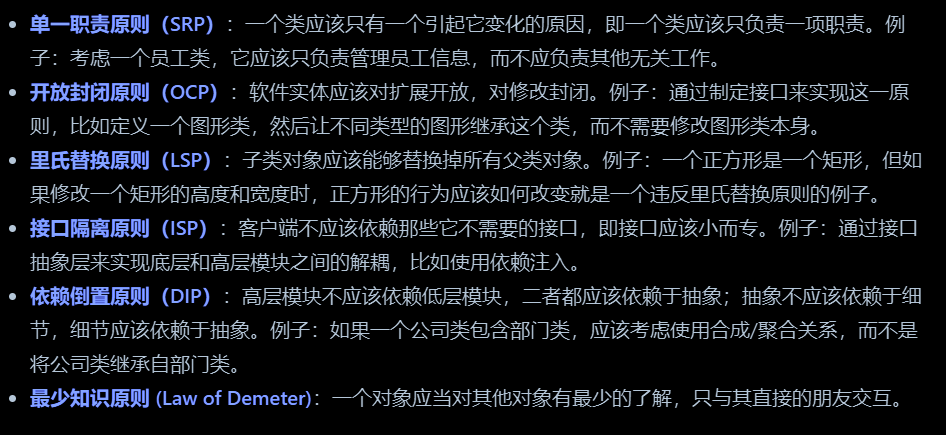
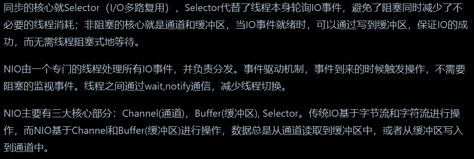
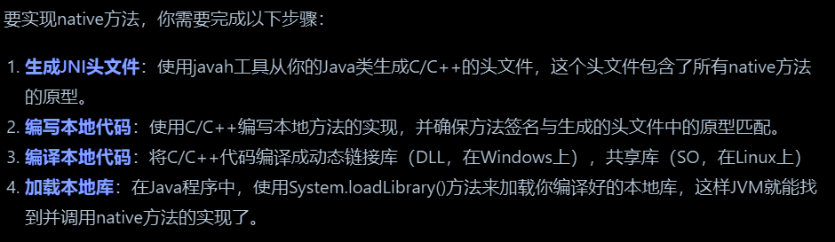
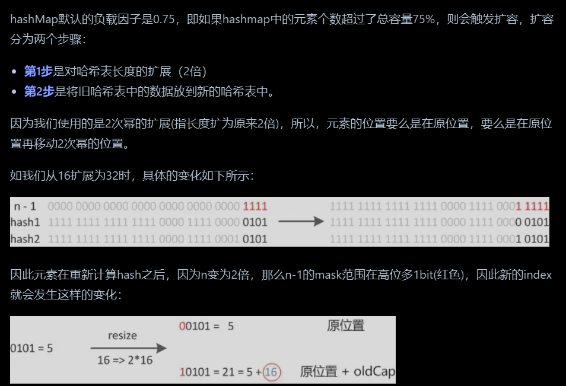
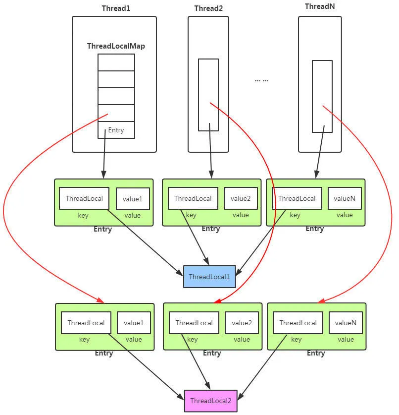
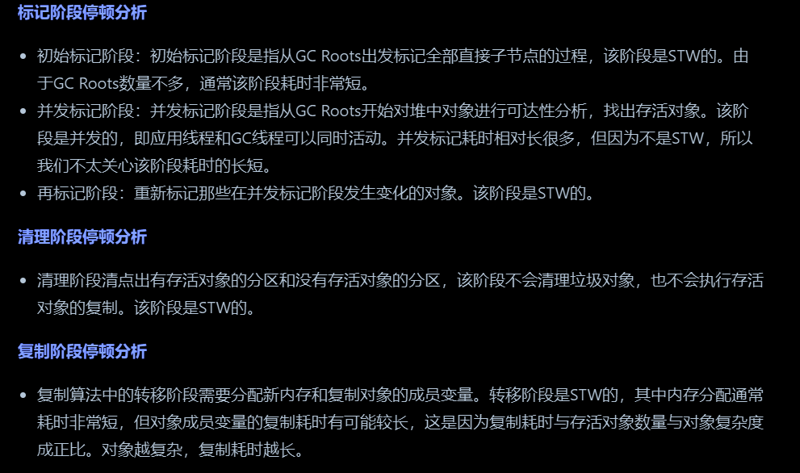

Java八股
2. Java
2.1 Java基础
Java的特点：平台无关性、面向对象、内存管理
JVM、JRE、JDK

- JVM是Java虚拟机，主要工作是解释自己的指令集（即字节码）并映射到本地的CPU指令集和OS的系统调用。JRE是Java运行时环境，JDK是Java开发工具包
Java解释和编译
- 编译性：Java源代码首先被编译成字节码，JIT 会把编译过的机器码保存起来,以备下次使用
- 解释性：JVM中一个方法调用计数器，当累计计数大于一定值的时候，就使用JIT进行编译生成机器码文件

使用BigDecimal而不是double的情景：涉及金钱等需要精确计算的情况
装箱（Boxing）和拆箱（Unboxing）是将基本数据类型和对应的包装类之间进行转换的过程，如int和Integer。在Java中，泛型只能使用引用类型，而不能使用基本类型，因此需要使用包装类。基本类型数据在读写效率方面，要比包装类高效，且占用空间少。
Java的Integer类内部实现了一个静态缓存池，用于存储特定范围内的整数值对应的Integer对象。
Java面向对象的三大特性包括：封装、继承、多态
- 封装：封装是指将对象的属性（数据）和行为（方法）结合在一起，对外隐藏对象的内部细节，仅通过对象提供的接口与外界交互。
- 继承：继承是一种可以使得子类自动共享父类数据结构和方法的机制，是代码复用的重要手段
- 多态：多态是指允许不同类的对象对同一消息作出响应。即同一个接口，使用不同的实例而执行不同操作。多态性可以分为编译时多态（重载）和运行时多态（重写），接口和对象类型转换也体现了多态。
面向对象编程中的六大原则：
- 
普通类可以直接实例化对象，而抽象类不能被实例化，只能被继承。抽象类中的方法可以有实现也可以没有实现。抽象类用于描述类的共同特性和行为，接口只描述行为。
Java不允许多继承，但是可以实现多个接口。接口成员变量默认为public static final，必须赋初值，不能被修改，所有的成员方法都是public、abstract的。在接口中，不可以有构造方法。
静态方法可以直接调用其他静态变量和静态方法，但不能直接访问非静态成员。
使用静态变量、方法的好处
- 不依赖对象实例，节省内存，提高性能
- 方便全局访问，易于调用和管理
- 实现类级别的数据共享
非静态内部类可以直接访问外部方法是因为编译器在生成字节码时会为非静态内部类维护一个指向外部类实例的引用。
final关键字主要有以下三个方面的作用：用于修饰类（不能继承）、方法（不能重写）和变量（不能再赋值）。实现对象深拷贝的方法：实现 Cloneable 接口并重写 clone() 方法、实现 Serializable 接口进行序列化和反序列化、手动递归复制
Java中创建对象的方式：new、反射（Class类的newInstance()和Constructor类的newInstance()）、clone()、序列化和反序列化
Java 反射机制是在运行状态中，对于任意一个类，都能够知道这个类中的所有属性和方法，对于任意一个对象，都能够调用它的任意一个方法和属性
Java注解：注解本质是一个继承了Annotation的特殊接口，其具体实现类是Java运行时生成的动态代理类。作用域为类、方法、字段。

throw语句：用于手动抛出异常。可以根据需要在代码中使用throw语句主动抛出特定类型的异常。throws关键字：用于在方法声明中声明可能抛出的异常类型。
try块中的代码将按顺序执行，如果抛出异常，将在catch块中进行匹配和处理。finally子块中的代码一定会执行，即使在try/catch中写了return语句也会被finally覆盖
重写
equals方法时必须重写hashCode方法，equals为true则hashcode一定相同，反之不成立（哈希冲突）StringBuilder不是线程安全的，StringBuffer是线程安全的（用了synchronized）Java 8引入了Stream API，它提供了一种高效且易于使用的数据处理方式，特别适合集合对象的操作，如过滤、映射、排序等。它对应的并行流是 ParallelStream。
把一个对象从一个jvm传到另一个jvm：序列化和反序列化、消息队列、网络套接字、rpc、共享数据库或缓存
单例模式
- lazy初始化的含义是指在调用
getInstance()时才进行初始化- volatile主要包含两个功能：保证修饰的变量对所有线程的可见性，禁止指令重排序优化
1 | |
Java NIO（non-blocking IO）、AIO（Asynchronous IO）、BIO（blocking IO）
- NIO是一种同步非阻塞的I/O模型，也是I/O多路复用的基础，可以只用一个线程处理多个客户端I/O。同步是指线程不断轮询IO事件是否就绪，非阻塞是指线程在等待IO的时候，可以同时做其他任务
- AIO是 NIO 的升级版本，提供了异步非堵塞的 IO 操作方式，是基于事件和回调机制实现的
- BIO是基于流模型实现的，交互的方式是同步、阻塞方式，也就是说在读入输入流或者输出流时，在读写动作完成之前，线程会一直阻塞在那里
- 
native方法是一种特殊类型的方法，它允许Java代码调用外部的本地代码

2.2 Java集合

线程安全集合
- Vector：线程安全的动态数组，内部方法基本都经过synchronized修饰
- CopyOnWriteArrayList：它是 ArrayList 的线程安全的变体。其中所有写操作（add，set等）都通过对底层数组进行全新复制来实现，允许存储 null 元素
- Hashtable：线程安全的哈希表，给每个方法加上 synchronized 关键字。由于同步导致的性能开销，所以已经很少被推荐使用，可以用ConcurrentHashMap。
- ConcurrentHashMap：它与 HashTable 的主要区别是二者加锁粒度的不同。JDK1.7加段锁，1.8换成行级锁
- ConcurrentSkipListMap：实现了一个基于SkipList（跳表）的可排序的并发集合
- ConcurrentSkipListSet：是线程安全的有序的集合。底层是使用ConcurrentSkipListMap实现。
- CopyOnWriteArraySet：是线程安全的Set实现，它是线程安全的无序的集合
- ConcurrentLinkedQueue：是一个适用于高并发场景下的队列，它通过无锁的方式(CAS)，实现了高并发状态下的高性能。
- BlockingQueue：与 ConcurrentLinkedQueue 的使用场景不同，主要功能并不是在于提升高并发时的队列性能，而在于简化多线程间的数据共享。它提供一种读写阻塞等待的机制，即如果消费者速度较快，则 BlockingQueue 则可能被清空，消费线程再试图从 BlockingQueue 读取数据时就会被阻塞。生产进程同理。
- 同样也有ConcurrentLinkedDeque和BlockingDeque
集合遍历方法：普通带索引for循环、for-each、迭代器、forEach方法、Stream API
hashmap的put过程：
- 第一步：根据要添加的键的哈希码计算在数组中的位置（索引）。
- 第二步：检查该位置是否为空（即没有键值对存在）
- 第三步：如果该位置已经存在其他键值对，检查该位置的第一个键值对的哈希码和键是否与要添加的键值对相同？
- 第四步：如果第一个键值对的哈希码和键不相同，则需要遍历链表或红黑树来查找是否有相同的键。如果找到了相同的键，则使用新的值取代旧的值。如果没有找到相同的键，则将新的键值对添加到链表的头部。红黑树同理。
- 第五步：检查链表长度是否达到阈值（默认为8），达到要转换成红黑树
- 第六步：检查负载因子是否超过阈值（默认为0.75）
- 第七步：扩容操作
- 第八步：完成添加操作。
HashMap在多线程下可能会出现的问题：JDK1.7中的 HashMap 使用头插法插入元素，在多线程的环境下，扩容的时候有可能导致环形链表的出现，形成死循环。因此，JDK1.8使用尾插法插入元素，在扩容时会保持链表元素原本的顺序，不会出现环形链表的问题。此外，多线程同时执行 put 操作，如果计算出来的索引位置是相同的，那会造成前一个 key 被后一个 key 覆盖，从而导致元素的丢失。
HashMap默认容量：JDK1.7的时候初始容量是16，但是JDK1.8的时候初始化HashMap的时候并没有指定容量大小，而是在第一次执行put数据，才初始化容量。
ConcurrentHashMap实现：
- JDK 1.7 中使用是数组加链表的形式实现，而数组又分为：大数组 Segment 和小数组 HashEntry。一个 ConcurrentHashMap 里包含一个 Segment 数组，一个 Segment 里包含一个 HashEntry 数组。分段锁技术将数据分成一段一段的存储，然后给每一段数据配一把锁，当一个线程占用锁访问其中一个段数据的时候，其他段的数据也能被其他线程访问。
- JDK 1.8 使用了数组 + 链表/红黑树的方式优化了实现，主要通过 volatile + CAS 或者 synchronized 来实现线程安全
- CAS是指compare and swap，意识是指一个旧的预期值A,主内存的值是B，要修改的值C，当且仅当A==B的时候，A的值才会被修改成C，而且这个操作是原子性的，是一个非阻塞性的 乐观锁。在Java中，CAS操作主要依赖于Unsafe类，该类提供了硬件级别的原子操作支持。Unsafe类中的
compareAndSwapInt、compareAndSwapLong和compareAndSwapObject方法用于实现CAS操作 - 添加元素时首先会判断容器是否为空：
- 如果为空则使用 volatile 加 CAS （乐观锁） 来初始化
- 如果容器不为空，则根据存储的元素计算该位置是否为空(键值)
- 如果根据存储的元素计算结果为空，则利用 CAS（乐观锁） 设置该节点
- 如果根据存储的元素计算结果不为空，则使用 synchronized（悲观锁） ，遍历桶中的数据，并替换或新增节点到桶中，最后再判断是否需要转为红黑树
2.3 Java并发编程
- Java的线程安全在三个方面体现：原子性、可见性、有序性
- 保证数据的一致性的方案：事务机制、锁、版本号
- 线程的创建方式：继承thread类、实现runnable接口、使用线程池（Executor框架）
- 调用
Thread.sleep()时，线程会释放 CPU，主动让出 CPU 时间片，但不会释放持有的锁。调用wait方法时，线程会释放持有的对象锁，进入等待状态，直到其他线程调用相同对象的notify()或notifyAll()方法唤醒它 - blocked状态不会使进程释放之前持有的锁，而waiting状态会
- 线程间通信方式
- Object 类的 wait()、notify() 和 notifyAll() 方法
Lock和Condition接口。Lock接口提供了比synchronized更灵活的锁机制，Condition接口则配合Lock实现线程间的等待 / 通知机制。Condition相当于条件变量，执行await()方法和signal()方法；Lock是锁，执行lock()和unlock()。volatile关键字。当一个变量被声明为volatile时，它会保证对该变量的写操作会立即刷新到主内存中，而读操作会从主内存中读取最新的值。- Semaphore。
Semaphore是一个计数信号量，它可以控制同时访问特定资源的线程数量。构造函数为Semaphore(int permits)，acquire()对应P操作，release()对应V操作 - CountDownLatch和CyclicBarrier略。
- Thread的
interrupt()方法不会立刻终止线程，只是设置中断标志位。线程需手动检查中断状态（isInterrupted()）或触发可中断操作（如sleep()，wait()，join())响应中断。阻塞操作中收到中断请求时，会抛出InterruptedException并清除中断状态 - 在多线程编程中，join() 方法用于确保一个线程在另一个线程完成之前不会继续执行。具体来说，当一个线程调用另一个线程的 join() 方法时，调用线程将被阻塞，直到被调用的线程完成执行
- 线程池相关类
ThreadPoolExecutor：最核心的线程池类，用于创建和管理线程池。通过它可以灵活地配置线程池的参数，如核心线程数、最大线程数、任务队列等Executors：线程池工厂类，提供了一系列静态方法来创建不同类型的线程池
ThreadLocal类- 可以为每个线程提供独立的变量副本，这样每个线程都拥有自己的变量，消除了竞争条件。
- 
- ThreadLocalMap内部维护了Entry数组，每个Entry代表一个完整的对象，key是ThreadLocal本身，value是ThreadLocal的泛型对象值。
- 当一个线程结束时，其
ThreadLocalMap也会随之销毁，但是ThreadLocal对象本身不会立即被垃圾回收，直到没有其他引用指向它为止。因此，在使用ThreadLocal时需要注意，如果不显式调用remove()方法，或者线程结束时未正确清理ThreadLocal变量，可能会导致内存泄漏
- 实现线程同步的方法：synchronized、Lock(ReentrantLock)、volatile、Atomic类
- Atomic类在实现细节上利用了CAS实现无锁的线程安全
- 锁机制相关
- 乐观锁和悲观锁：悲观锁通常指在访问数据前就锁定资源，假设最坏的情况，即数据很可能被其他线程修改。
synchronized和ReentrantLock都是悲观锁的例子。乐观锁通常不锁定资源，而是在更新数据时检查数据是否已被其他线程修改。乐观锁常使用CAS、版本号或时间戳来实现。 - 自旋锁是一种锁机制，线程在等待锁时会持续循环检查锁是否可用，而不是放弃CPU并阻塞。通常可以使用CAS来实现。这在锁等待时间很短的情况下可以提高性能，但过度自旋会浪费CPU资源。
- “可重入”意味着同一个线程对同一把锁可以多次获取而不会死锁
- 公平锁和非公平锁：公平锁指多个线程按照申请锁的顺序来获取锁，线程直接进入队列中排队，队列中的第一个线程才能获得锁。非公平锁中多个线程加锁时先通过 CAS 尝试获取锁，能抢到锁到直接占有锁，抢不到才会到等待队列的队尾等待。非公平锁避免了线程休眠和恢复的操作，减少了内核态和用户态的切换，因此吞吐量更大。
- 偏向锁：对象在被某个线程第一次获取锁（例如 synchronized）时，JVM 会把这个线程的ID记录在对象头（Mark Word）中，将锁“偏向”这个线程。之后这个线程再次进入同步块时，只需检查对象头中记录的线程ID等于自己，无需做任何同步操作。
- 轻量级锁：将对象的MarkWord存储到线程的虚拟机栈上，然后通过CAS将对象的MarkWord的内容设置为指向Displaced Mark Word的指针，如果设置成功则获取锁，该过程可以自旋（有次数限制）。出临界区同样也要用CAS进行替换。
- 重量级锁：线程会被操作系统调度然后挂起，这可以节约CPU资源。

- 乐观锁和悲观锁：悲观锁通常指在访问数据前就锁定资源，假设最坏的情况，即数据很可能被其他线程修改。
- Lock类相关
ReentrantLock是 Java 并发包（java.util.concurrent.locks）中的一个可重入互斥锁实现，它提供了比synchronized关键字更灵活、更强大的锁机制。它支持设置超时时间，公平和非公平策略(默认是非公平锁)，且支持多个条件变量（Condition condition = lock.newCondition();）。ReadWriteLock接口定义了一种锁，允许多个读取者同时访问共享资源，但只允许一个写入者。读写锁通常用于读取远多于写入的情况，以提高并发性。ReentrantLock基于AQS(AbstractQueuedSynchronizer)实现。AQS 是一个用于构建锁和同步器的基础框架，它通过一个先进先出的等待队列管理多个线程的同步操作。- ReentrantLock实现可重入锁的机制是基于线程持有锁的计数器。
- ReentrantLock的tryLock() 方法不遵守设定的公平原则
- synchronized相关
- synchronized修饰普通方法锁的是当前实例，而修饰静态方法锁的是class对象
- synchronized 工作原理：基于对象的监视器锁。监视器锁是关联在某个对象上的锁，当线程执行同步代码时需要先获得该对象的监视器锁。主要依赖于字节码指令
monitorenter和monitorexit，分别是获取和释放监视器锁 - synchronized 属于非公平锁
- synchronized是可重入锁，底层是利用系统mutex Lock实现的。每一个可重入锁都会关联一个线程ID和一个锁状态status。
- 锁膨胀：synchronized 从无锁升级到偏向锁，再到轻量级锁，最后到重量级锁的过程，属于JVM对synchronized的优化
- CAS
- CAS 是一种乐观锁机制，它包含三个操作数：内存位置（V）、预期值（A）和新值（B）。CAS 操作的逻辑是，如果内存位置 V 的值等于预期值 A，则将其更新为新值 B，否则不做任何操作。
- CAS的缺点主要有3点：
- ABA问题：ABA的问题指的是在CAS更新的过程中，当读取到的值是A，然后准备赋值的时候仍然是A，但是实际上有可能A的值被改成了B，然后又被改回了A。
- 循环时间长开销大：自旋CAS的方式如果长时间不成功，会给CPU带来很大的开销。
- 只能保证一个共享变量的原子操作：只对一个共享变量操作可以保证原子性，但是多个则不行
- Java 提供的工具类会在 CAS 操作中增加版本号以避免ABA问题
- volatile并不能解决多线程并发下的复合操作问题，比如i++这种操作不是原子操作，如果多个线程同时对i进行自增操作，volatile不能保证线程安全。
- 死锁条件：互斥条件、持有并等待条件、不可剥夺条件、环路等待条件。避免死锁问题就只需要破环其中一个条件就可以，最常见的并且可行的就是使用资源有序分配法，来破环环路等待条件，即给资源设置全局获取顺序。
- 线程池

- 线程池参数：
- corePoolSize：线程池核心线程数量
- maximumPoolSize：线程池中最多可容纳的线程数量。
- keepAliveTime：线程数超过核心数时启用，空闲时间超过被销毁
- unit：就是keepAliveTime时间的单位
- workQueue：工作队列。
- threadFactory：线程工厂。可以用来给线程取名字等等
- handler：拒绝策略。可以用预置的也可以自定义
- 预置拒绝策略
- CallerRunsPolicy，使用线程池的调用者所在的线程去执行被拒绝的任务
- AbortPolicy，直接抛出一个任务被线程池拒绝的异常
- DiscardPolicy，不做任何处理，静默拒绝提交的任务
- DiscardOldestPolicy，抛弃最老的任务，然后执行该任务
- 线程池种类
- ScheduledThreadPool：可以定期执行任务，比如每隔 10 秒钟执行一次
- FixedThreadPool：核心线程数和最大线程数一样
- CachedThreadPool：线程数是几乎可以无限增加的
- SingleThreadExecutor：它会使用唯一的线程去执行任务，任务按被提交的顺序依次执行
- SingleThreadScheduledExecutor：定期 + 唯一线程
- 线程池关闭方法：shutdown ()，shutdownNow()。前者使用了以后会置状态为SHUTDOWN，正在执行的任务会继续执行下去，没有被执行的则中断，再提交任务会抛异常。后者置状态为STOP，并通过调用 Thread.interrupt() 方法，试图停止所有正在执行的线程（可能无法成功），不再处理还在池队列中等待的任务，它会返回那些未执行的任务列表(
List<Runnable>) - 提交的任务可以通过返回的Future对象的
cancel(boolean mayInterruptIfRunning)方法取消，参数为ture允许中断正在执行的任务
2.4 Java虚拟机
JVM内存模型
- 根据 JDK 8 规范，JVM 运行时内存共分为虚拟机栈、堆、元空间、程序计数器、本地方法栈五个部分。还有一部分内存叫直接内存，通过 NIO 类引入，属于操作系统的本地内存，也是可以直接操作的。

- 程序计数器：存储当前线程正在执行的 Java 方法的 JVM 指令地址
- 虚拟机栈：每个线程都有自己独立的 Java 虚拟机栈，生命周期与线程相同，用于存储局部变量表、操作数栈、动态链接、方法出口
- 本地方法栈：与 Java 虚拟机栈类似，主要为虚拟机使用到的 Native 方法服务
- 堆：被所有线程共享，在虚拟机启动时创建，用于存放对象实例。
- 元空间：从Java 8开始，永久代被元空间取代，用于存储类的元数据信息，如类的结构信息（如字段、方法信息、方法的字节码等）。
- 一些细节
- 创建一个对象时，对象的引用在当前方法的栈上，对象的实例在堆上
- 类的class对象存储在堆上(Java 8及以后)，元空间存的是类的字节码和类元数据而非对象。而在Java7及以前这两个都存在永久代中
- 在 Java 8 及以后，静态变量存储在堆中，和它所在的class对象在一起
- 在 Java 8 及以后，字符串常量池被移动到 Java 堆中（实际的字符串值），而这些常量的符号引用存储在元空间
堆相关

- 新生代：新生代分为Eden Space和Survivor Space。大多数新创建的对象首先存放在Eden Space中，当Eden区满时，会触发一次Minor GC（新生代垃圾回收）。在Survivor Spaces中，通常分为两个相等大小的区域，称为S0（Survivor 0）和S1（Survivor 1）。在每次Minor GC后，存活下来的对象会被移动到其中一个Survivor空间
- 老年代：存放过一次或多次Minor GC仍存活的对象会被移动到老年代。老年代中的对象生命周期较长，Major GC（也称为Full GC，涉及老年代的垃圾回收）发生的频率相对较低
- 大对象通常会直接分配到老年代，有助于减少内存碎片的产生
引用类型主要分为强引用（一般的赋值）、软引用（内存溢出前回收）、弱引用（每次GC都会回收，用于缓存系统）、虚引用四种
内存泄漏是指程序在运行过程中不再使用的对象仍然被引用，而无法被垃圾收集器回收，从而导致可用内存逐渐减少。发生情景：静态属性、未关闭的资源、ThreadLocal
创建对象过程
类加载器与双亲委派模型

- 启动类加载器：最顶层的类加载器，负责加载Java的核心库，是JVM的一部分
- 扩展类加载器：是Java语言实现的，继承自ClassLoader类，负责加载Java扩展目录下的包和类库。扩展类加载器由启动类加载器加载，并且父加载器就是启动类加载器。
- 系统类加载器/ 应用程序类加载器：是Java语言实现的，负责加载用户类路径（ClassPath）上的指定类库，是我们平时编写Java程序时默认使用的类加载器。
- 双亲委派模型：核心思想是当一个类加载器收到类加载的请求时，首先不会自己去尝试加载这个类，而是把这个请求委派给父类加载器去完成。只有当父加载器反馈自己无法完成这个加载请求时，子加载器才会尝试自己去加载。
- 双亲委派模型的作用：保证类的唯一性，防止用户自定义类覆盖核心类库；保证安全性，只加载信任的类；支持不同层次的类加载器服务于不同的类加载需求，简化流程
类加载过程

- 加载：将字节码数据从不同的数据源读取到 JVM 中，并映射为 JVM 认可的数据结构（Class 对象）
- 连接：验证（符合JVM规范）、准备（创建并为静态变量赋0值）、解析（将符号引用转换为直接引用）
- 初始化：执行类的构造器方法（编译器自动生成的）
判断垃圾算法
- 引用计数法：为每个对象分配一个引用计数器，每当有一个地方引用它时，计数器加1；当引用失效时，计数器减1。当计数器为0时，表示对象不再被任何变量引用，可以被回收。无法处理循环引用。
- 可达性分析算法（主要）：从一组称为GC Roots（垃圾收集根）的对象出发，向下追溯它们引用的对象，以及这些对象引用的其他对象，以此类推。如果一个对象到GC Roots没有任何引用链相连，那么这个对象就被认为是不可达的，可以被回收。

垃圾回收算法
- 标记-清除算法：标记-清除算法分为“标记”和“清除”两个阶段，首先通过可达性分析，标记出所有需要回收的对象，然后统一回收所有被标记的对象。缺点是效率不高和内存碎片。
- 复制算法：将内存分成两块，每次申请内存时都使用其中的一块，当内存不够时，将这一块内存中所有存活的复制到另一块上，然后将然后再把已使用的内存整个清理掉。缺点是只能用一半，内存利用率不足
- 标记-整理算法：“标记”过程与“标记-清除算法”的标记过程一致，但标记之后不会直接清理，而是将所有存活对象都移动到内存的一端。移动结束后直接清理掉剩余部分。
- 分代回收算法：分代收集是将内存划分成了新生代和老年代。当经历一次 GC 之后如果对还存活，那么对象的年龄 +1。年龄超过阈值（默认15）进入老年代。
垃圾回收器

- G1的混合回收过程可以分为标记阶段、清理阶段和复制阶段
- STW(Stop The World)：指垃圾回收时停止应用线程的阶段，G1中包括初始标记阶段、再标记阶段、清理阶段、复制(转移)阶段
- 
GC分类
- Minor GC（也称为Young GC）、Major GC（有时也称为Old GC）、以及Full GC
- Full GC触发条件：直接调用
System.gc()或Runtime.getRuntime().gc()方法、Minor GC时老年代放不下存活的对象、元空间的空间不足时
除了堆，GC也会对元空间（方法区）进行垃圾回收